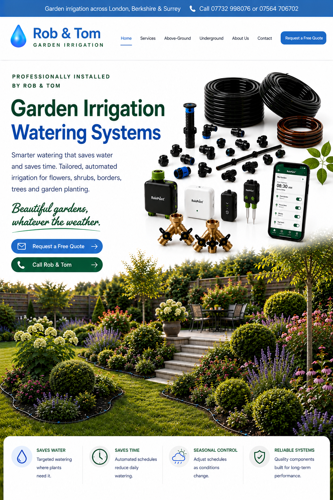

Above-Ground Systems
Flexible and cost-effective drip and micro-irrigation for beds, shrubs and planting.
Explore above-ground →Smarter watering that saves water and saves time. Tailored, automated irrigation for flowers, shrubs, borders, trees and garden planting.
Beautiful gardens, whatever the weather.

We design and install efficient systems using high-quality components, with neat installation, smart control options and continued aftercare.
Flexible and cost-effective drip and micro-irrigation for beds, shrubs and planting.
Explore above-ground →A more discreet option with irrigation lines positioned below the surface.
Explore underground →Timers, controllers, seasonal adjustment and continued support after installation.
See our services →We monitor developments in garden irrigation and keep our installations aligned with current products, smarter controls and modern watering techniques.
Some water companies provide exemptions for approved fixed drip or trickle irrigation systems when they meet specific conditions. This can make a correctly designed drip system particularly useful during temporary restrictions.
The exact exemption depends on your water supplier and the restrictions in force. Always check the latest rules for your address before use.
Your own project photos can be added here at any time.


Covering London, Berkshire and Surrey.